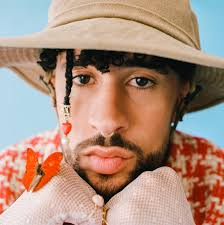
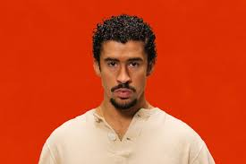
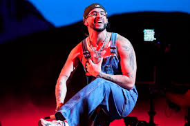

BAD BUNNY
 
| TITULO | LETRA |
| MOSCOW MULE | Si yo no te escribo
Tú no me escribe', ey Si tú quieres, te busco Yo sé dónde tú vive' Quizá hoy está' aborrecía Pero por dentro tú tiene' alegría Si quieres, te la saco Dos trago' y sabes que me pongo bellaco No somos na, pero estamo envuelto' hace rato, oh-oh, oh WhatsApp sin el retrato, no guarda mi contacto (ey, ey, ey, ey) Pero se la saco Dos trago' y sabes que me pongo bellaco No somos na, pero estamo envuelto' hace rato, oh-oh, oh WhatsApp sin el retrato, no guarda mi contacto-to Todo e' underwater (ey) Baby, vamo pa'l cuarto quarter En la Uru' comiéndono el pare Te vo'a dar duro pa que no me compare', ey Cuidao con ese mahón, que se va a romper (ey) Ese booty lo va a romper (ey) Yo no sé si yo te vuelvo a ver Si mañana me vo'a perder Tú ere' una player, me hiciste un crossover Esta ve' metiste, me diste game over, eh-eh Porque no puedo olvidar El perreo aquel, que se fue viral Dime si mañana te va' a quedar Después de la alarma te lo voy a dar, ey Hoy tú no va' a trabajar, ja, no Si quieres, te la saco Dos trago' y sabes que me pongo bellaco No somos na, pero estamo envuelto' hace rato, oh-oh, oh WhatsApp sin el retrato, no guarda mi contacto Pero se la saco Dos trago' y sabes que me pongo bellaco No somos na, pero estamo envuelto' hace rato, oh-oh, oh WhatsApp sin el retrato, no guarda mi contacto Me gustan así, piquetúa Mami, qué rica te ve' desnúa Quizás no sentiste lo que yo sentí Pero aún te debo una noche en la suite Pa darte tabla Dale, mami, habla Tú ere' una diablona No te haga' Pa darte tabla Dale, mami, habla Tú ere' una diablona No te haga' No, no, no, no (no, no, no, no) No, no, no, no (no, no, no, no) No, no, no, no (no, no, no, no) Ey, yo no sé tú Pero yo quisiera amanecer esnú En una playa por Balí, si no, Cancún Pide otro Moscow Mule (ey) Que ando en nota, nota Ven y choca Conmigo que se joda Baby, tú tas grandota Pero hoy ando en nota, nota Ven y choca Conmigo que se joda (eh) Que se joda (ey) Mami, tú quieres perreo (tú quieres perreo) Tú quieres perreo (tú quieres perreo) Tú quieres bellaqueo (tú quieres bellaqueo) Tú quieres bellaqueo (tú quieres bellaqueo) Mami, tú quieres perreo (tú quieres perreo) Tú quieres perreo (tú quieres perreo) Tú quieres bellaqueo (tú quieres bellaqueo) Tú quieres bellaqueo (tú quieres bellaqueo) |
| AGUACERO | Ey, ey
Ey, ey Me tienes el bicho ansioso, hey, ey Quédate en cuatro, que se ve precioso (ey, ey) Ese culito es un tramposo, ey Si abres una iglesia, me hago religioso Exquisito, delicioso Me la como y ni reposo, ey, ey Baby, lo nuestro es amistoso, je Pero si tú quieres, cuando sea, soy tu esposo Okay, sí, sí Encima de mí fue que te conocí, ey Ey, mami, tú eres así No te hagas, yo también soy así Okay, sí, sí Encima de mí fue que te conocí Ey, mami, tú eres así No te haga, yo también soy así Porque yo soy un cuero y tú también Y tú también Si el calor es de noventa, el aguacero es de cien Vamo' a pasarla bien Yo soy un cuero y tú también Y tú también Si el calor es de noventa, el aguacero es de cien Vamo' a pasarla bien Pero dale easy, easy, ey Que sabes que soy pisci', ey Y enamorarme es bien fácil, ey Pero olvidarme es difícil Mami, dale, easy, easy, ey Que sabes que soy pisci', je Y enamorarme es bien fácil, ey Pero olvidarme es difícil Y nadie se ha enterado To' los mensajes archivado' La baby estudió psicología Y conmigo hizo el doctorado, me tiene desquiciado Ey, tú me prendes como fósforo Contigo hasta en los semáforos, ey (ey, ey) Yo no sé qué opina el horóscopo, no Pero pichea, ven y pártelo Corriendo Can-Am, hasta encajarno' en la orilla Vo'a buscarme novia pa que tú seas mi chilla, ey Te gusta ir a la milla, ey Baby, úsame de silla Si quieres madrugo pa hacértelo temprano En lo que acaba el veranov Todos dicen que ese culo lo hizo el cirujano Y fue Diosito con sus propias mano' Ey, ey, ey Siempre te doy con los troyano', ey, eyv Si preguntan, di que somos primos lejano', ja, ja Ey, ey, ja, ja, ey Tranquila, no te voy a decir "te amo" Na, na Porque yo soy un cuero y tú también Y tú también Si el calor es de noventa, el aguacero es de cien Vamo' a pasarla bien Porque yo soy un cuero y tú también Y tú también Si el calor es de noventa, el aguacero es de cien Vamo' a pasarla bien Pero dale easy, easy, ey Que sabes que soy pisci', ey Y enamorarme es bien fácil, ey Pero olvidarme es difícil, ey |
| ONE DAY | You know sometimes I think about us now and then But I never wanna fall again, ah-ah-ah Yo no te quisiera olvidar Pero contigo es todo o na Yeah, yeah You're deep in the water, yeah, you're drownin' us You question my love like it's not enough But I hate that you know, you know, you know You got me tied up You regret it now, but it's your mistake What makes you think that my mind will change? And you hate that you know, you know, you know You know you're messed up One day you'll love me again One day you'll love me for sure One day you'll wake up feelin' how I've been feelin' Baby, you'll knock at my door One day you'll love me again Hug me again 'til the end One day you'll beg me to try One day you'll realize I'm more than your lover I'm more than your lover, I'm your friend Acércate un poquito nomá' Que yo quiero que te quedes conmigo Deja a tus amiga' allá atrás Que nos vamos en un viaje escondido' No' vamo pa Turks and Caicos Y ahí calmamo las ganas Suéltate conmigo, mama Que ya no hay marcha atrás Una noche sin ti No es tan fácil, baby Que yo soy pa ti Y tú eres pa mí Nunca me dejes de querer, oh, na-na-na Contigo por siempre, babe No quiero dejarte esta vez One day you'll love me again One day you'll love me for sure One day you'll wake up feelin' how I've been feelin' Baby, you'll knock at my door One day you'll love me againv Hug me again 'til the end One day you'll beg me to try One day you'll realize I'm more than your lover (yeah, yeah) I'm more than your lover, I'm your friend (yeah) Yo sé que estoy en tu corazón, quizá en el fondo Otra baby me escribe, nunca le respondo (no) La vida da vuelta' y el mundo e' redondo Y yo voy a que te beso de nuevo en London O si no en Marbella Encima de la arena viendo las estrella' Yo sé que ni la' ola' han borrao mi huella Pero tu pichaera e' lo que me atropella Sol, playa y en la arena, vamo allá (¡wuh!) Baby, no te quede' callá' Yo sé que tú quiere' guayar conmigo Otra vez me tienes en depresión Fumando en la habitación, eh Pero yo sé que One day you'll love me again (¡wuh!) One day you'll love me for sure One day you'll wake up feelin' how I've been feelin' Baby, you'll knock at my door One day you'll love me again Hug me again 'til the end One day you'll beg me to try One day you'll realize I'm more than your lover I'm more than your lover, I'm your friend (babe) Ay-ay-ay-ay-ay-eh One day you'll love me again One day you'll realize I'm more than your lover I'm more than your lover, I'm your friend J Balvin man Bad Bunny, babe Tainy Latino Gang La Familia |
| TAROT | Verte en el VIP de lejito e'un privilegio Baby, tú ere' un mito, ese culito e'un misterio Tú loquita porque te cojan y yo que me coja' en serio Y a Dios le vo'a pedir que te lo explique Que tú estás muy dura, tú tienes el pique No te sorprenden to' estos bobo' con ticket Tú lo quе quiere' es quе te chi- Ojalá y tenga suerte Porque no cualquiera puede llegarte Pero yo voy a mí, pa que hoy tú me la suelte Tienes la disco de museo, ma, tú ere' arte Y yo pagué, pa verte Y va a gustarte To lo que quiero hacerte, eh Hoy tengo que hablarte Tienes la disco de museo, ma, tú ere' arte Ojalá y tenga suerte Eh-eh, ey Si subiste una story es pa que te lo comenten Si te mandé un fueguito es que me tiene' caliente Tú estás dura de espalda y más rica de frente, eh-eh Mami, yo le llego al oeste, je Si es pa darte este, ey Baby, yo quiero darte la' buena' noche pa que te acueste' Y si se da al fin, nos vamo' de aquí Ojalá diga' que sí y vamo' a darle Que anda bonita y suelta, bonita y suelta Se dejó del gato y tiene cinco de repuesto Yo quiero saber con qué panticito te acuesta' Baby, dime si tú tas puesta Ojalá y tenga suerte Porque no cualquiera puede llegarte Pero yo voy a mí, pa que hoy tú me la suelte' Tienes la disco de museo, ma, tú ere' arte Yo pagué pa verte Y va a gustarte To lo que quiero hacerte, eh Hoy tengo que hablarte Tienes la disco de museo, ma, tú ere' arte Ojalá y tenga suerte Pa ganarte Y por más que me ignora, está imposible ignorarte El sol al lao tuyo no es tan brillante Yo soy Da Vinci y tú mi obra de arte Tú ere' arte Porque tu flow, Dios lo bendiga Llega y toas las babie' te ligan Abdominale' y sin hacerte la barriga Tu ex todavía te hostiga Porque tú tas cotizá Toas las marca actualizá Baby, si fuera cristiano, hoy te fueras bautizá Quítate to, que ya te la quiero ver Que tú tas trending sin tenerte que joder Vente conmigo, nos podemo' beber A ti te va a correr Ojalá y tenga suerte Porque no cualquiera puede llegarte Pero yo voy a mí pa que hoy tú me la suelte' Tienes la disco de museo, ma, tú ere' arte Y yo pagué pa verte Y va a gustarte To lo que quiero hacerte, eh |
| DAKITI | Baby, ya yo me enteré, se nota cuando me ves Ahí, donde no has llegao, sabes que yo te llevaré Y dime qué quieres beber, es que tú eres mi bebé ¿Y de nosotros quién va a hablar?, si no nos dejamos ver Y a veces es Dolce, a veces Bulgari Cuando te lo quito después de los parties Las copas de vino, las libras de mariv Tú estás bien suelta, yo de safari Tú muevе' el culo fenomenal Pa yo devorarte como animal Si no te has venío, yo te vo'a esperar En mi cama y lo vo'a celebrar Baby, a ti no me opongo Y siempre te lo pongo Y si tú me tira', vamo a nadar en lo hondo Si es por mí, te lo pongo De septiembre hasta agosto A mí sin cojones lo que digan tu' amiga' Ya yo me enteré, se nota cuando me ves Ahí, donde no has llegao, sabes que yo te llevaré Y dime qué quieres beber, es que tú eres mi bebé ¿Y de nosotros quién va a hablar?, si no nos dejamos ver (¿me sigue'?) Mami, me tienes juqueao, sí Si fueras la Uru', me tuvieses parqueao Dando vueltas por Condado Contigo, siempre arrebatao Tú no eres mi señora, pero Toma cinco mil, gástalo en Sephora Louis Vuitton, ya no compra en Pandora Como piercing, a los hombres perfora, eh-eh-eh Hace tiempo le rompieron el cora (el cora) Estudiosa, puesta pa ser doctora (doctora) Pero (pero) le gustan los títeres wheeleando motora (motora) Yo estoy pa ti las 24 hora' Baby, a ti no me opongo Y siempre te lo pongo (siempre te lo pongo) Y si tú me tira', vamo a nadar en lo hondo (nadar en lo hondo) Si es por mí, te lo pongo De septiembre hasta agosto Y a mí sin cojones lo que digan tu' amiga' Ya yo me enteré, se nota cuando me ves Ahí, donde no has llegao, sabes que yo te llevaré Y dime qué quieres beber, es que tú eres mi bebé ¿Y de nosotros quién va a hablar?, si no nos dejamos ver Y a veces es Dolce, a veces Bulgari Cuando te lo quito después de los parties Las copas de vino, las libras de mari Tú estás bien suelta, yo de safari Tú muevе' el culo fenomenalv Pa yo devorarte como animal Si no te has venío, yo te vo'a esperar En mi cama y lo vo'a celebrar |